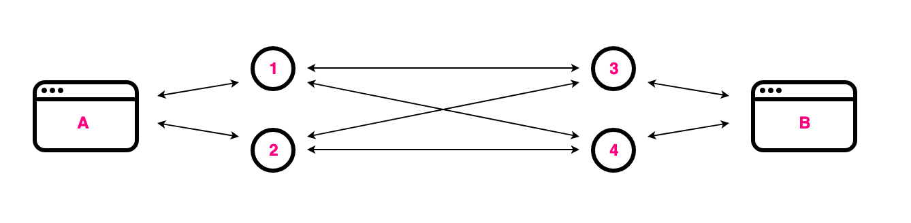
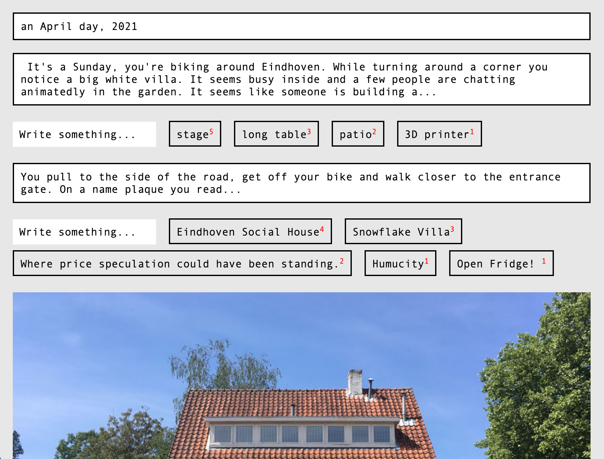
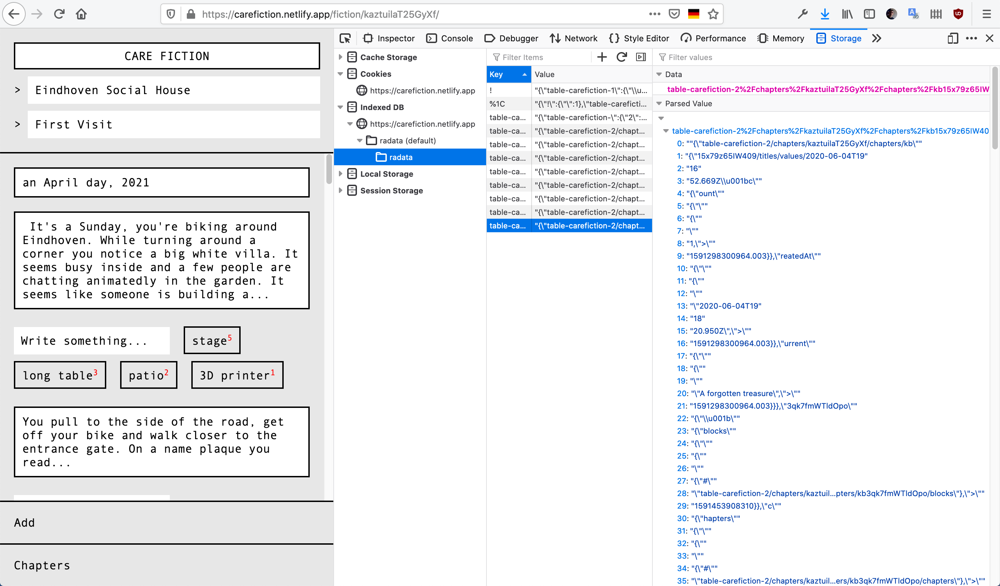
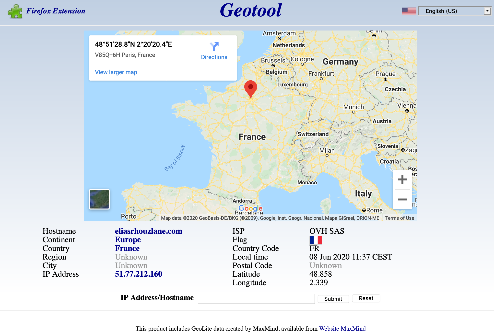
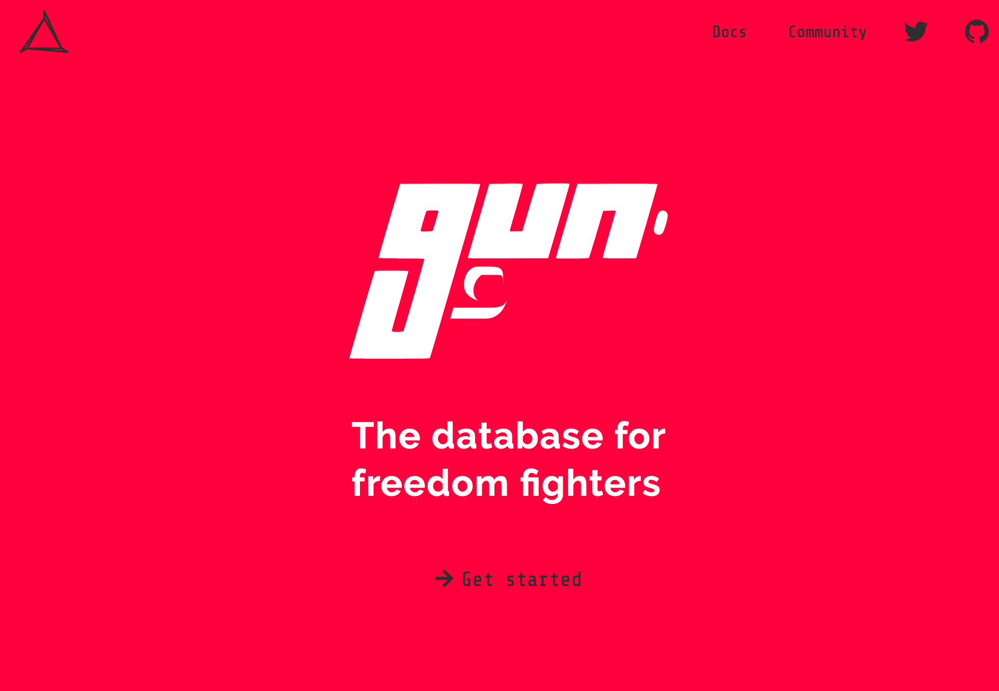
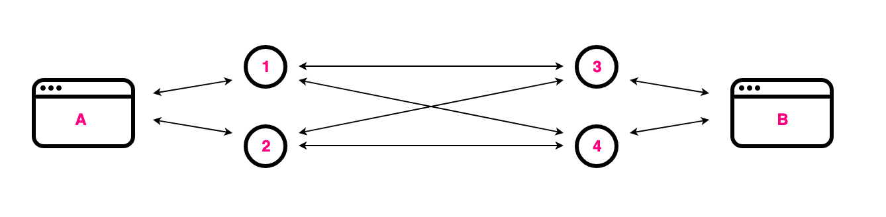
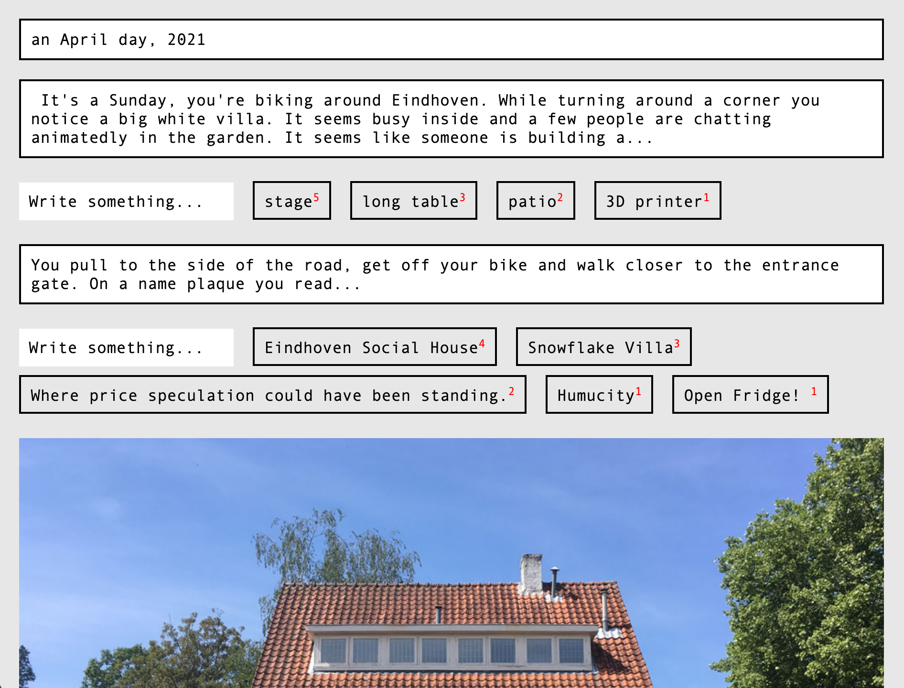
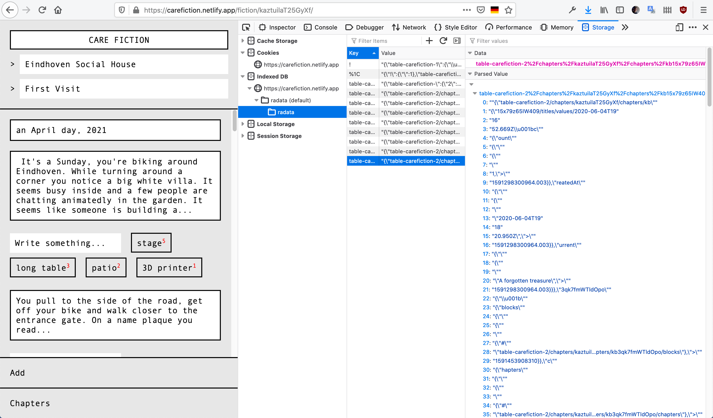
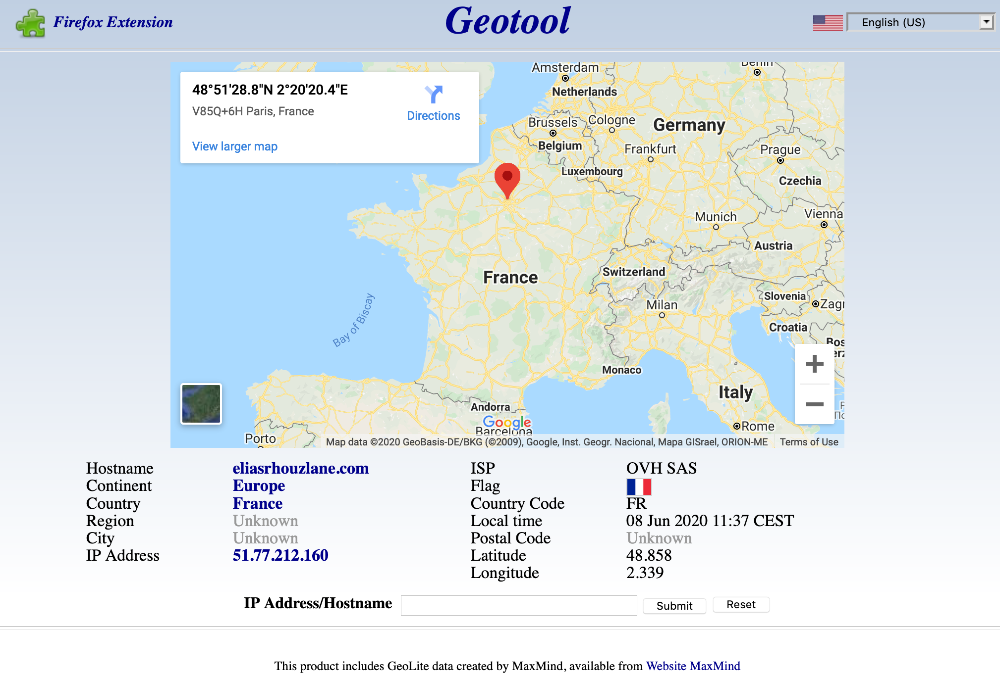
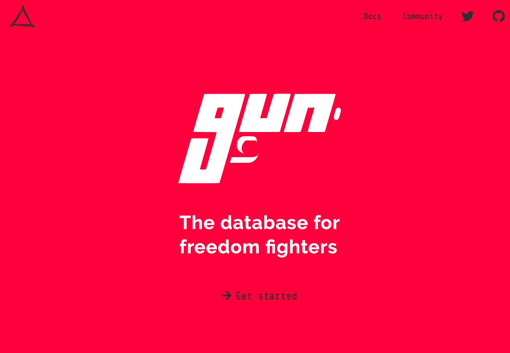

architecture review
Care Fiction is decentralized
 You become one node of the mesh. One ant of the colony.
It's peer-to-peer, like torrents.


This is shown in the DNA


There is no central authority. The responsability and trust is shared.
Because we own the data both conceptually and physically.
Redesign of the web authority and for true data ownership.
Collective Effort
This shared design is built apon the Gun framework.

You become one node of the mesh. One ant of the colony.
It's peer-to-peer, like torrents.


This is shown in the DNA


There is no central authority. The responsability and trust is shared.
Because we own the data both conceptually and physically.
Redesign of the web authority and for true data ownership.
Collective Effort
This shared design is built apon the Gun framework.
